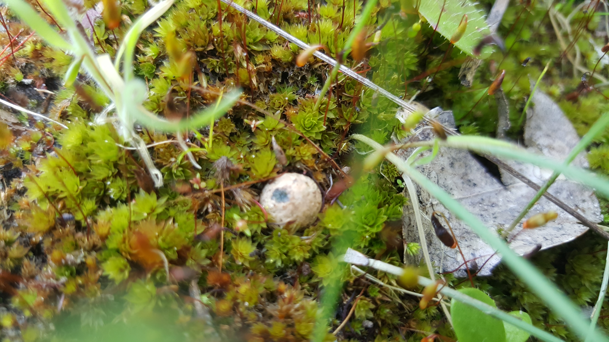
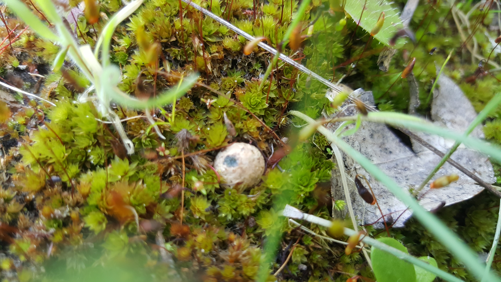

A flowering Albuca cooperi

A flowering Albuca cooperi
A beautiful shelf fungus growing on the base of a fallen tree that I suspect was a black wattle.


I decided to check on how the San Pedros were doing and found this LBM fruiting by the base of one of the cacti.


The erosion of the sandy soil creates the ideal little islands for moss to grow on.


I suspect these to be Laccaria laccata's because eucalyptus trees make up the majority of this planting.


Two puffballs emerging from the ground.

 

I have only seen empty shells and not a single living snail. This one must have thought this a soft spot to rest his tired foot.


A Scleroderma bud pushing through the turf.

Growing between the rings of this decaying tree trunk I found a healthy population of Disa bracteata getting ready to flower. You might have the expectation that these must make a beautiful display because of the much more famous D.uniflora , they are cute but pale in comparison to their more showy cousins.


I quickly came across a Scleroderma(earthstar) that had already burst open.


Another gorgeous bryophyte with the appearance of a tiny palm tree forest.


This one looks like something has taken a few bites.


The way this one has weathered makes it look like a solid column rising from the ground.


And a few close up shots of the moss growing at the base.


This one was the largest I found. The ground is so barren because I suspect the area is flooded during heavy rains by a nearby stream.


My hopes were fufulled when I came across these ripe puffballs. They might be of the genus Bovista , but I really am not sure.


Another LBM.

Done.